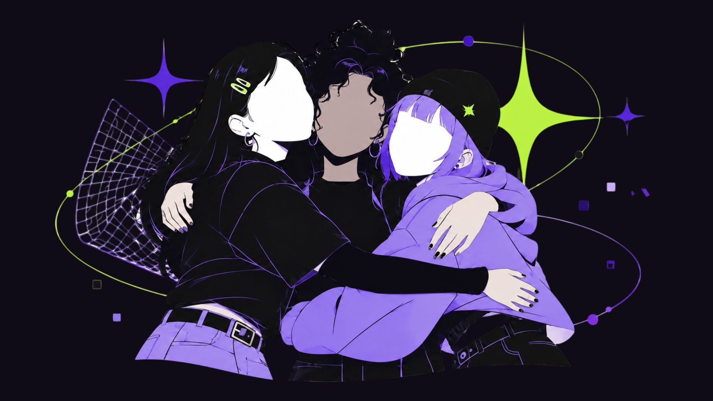

ÁEAS Y ROLES
Un recorrido por los distintos roles y disciplinas para que descubras dónde encaja tu talento.
Volver a la partida, con nuestras propias reglas. Una plataforma para jugar, profesionalizarte, competir y conectar con comunidades en la industria de los videojuegos.
ENCONTRÁ TU CAMINO ᯓ★El gaming es mucho más que jugar. Enterate de las distintas maneras de participar en la industria y hallá dónde querés estar.
¿Querés empezar a jugar y no sabés por dónde? Encontrá guías para principiantes y descubrí qué juegos van con vos.
✩✭Conocé las áreas en las que podés desarrollarte y encontrá tu próxima oportunidad.
✩✭Conectá con otros jugadores, compartí tu pasión y sé parte de algo más grande.
✩✭Descubrí nuevas oportunidades para competir, mejorar tus habilidades y formar parte de la comunidad de los esports.
✩✭No necesitás experiencia previa: conocé las plataformas y los tipos de juegos, aprendé lo básico y encontrá por dónde empezar.

Explorá disciplinas, conocé opciones de formación y preparate para llevar tu pasión al ámbito profesional.

Reaparecer juntas en un espacio seguro para conectar, jugar acompañadas y sostenernos entre nosotras.


Conocé los torneos, equipos y circuitos que forman parte del ámbito competitivo.
Despejá tus dudas!
Te dejamos un compendio de preguntas frecuentes para orientarte.
Si no encontrás tu respuesta, mandanos un mensaje y te ayudamos a resolverla.
Fem Respawn es un espacio abierto a mujeres y disidencias. La plataforma fue concebida para construir una red colectiva y un entorno seguro donde todas las identidades históricamente invisibilizadas o discriminadas dentro de la cultura gamer puedan jugar, crear, competir, trabajar y habitar los espacios en confianza y comunidad.
Ya sea que juegues de forma casual, quieras aprender a desarrollar, te interese la industria desde el arte, la comunicación o la gestión, o simplemente busques un espacio seguro para conectar con otras pibas y disidencias, la plataforma está pensada para acompañarte en cualquier etapa
Fem Respawn es una plataforma integral organizada en cuatro pilares esenciales: Explorá (recursos para conocer la industria argentina, glosarios y primeros pasos), Trabajá (guías de áreas laborales, consejos para armar tu portfolio, tarifarios de referencia y bolsa de empleo inclusiva), Comunidad (nuestro punto de respawn seguro con servidor de Discord, directorio de agrupaciones y salas para jugar en red sin acoso) y Competí (información sobre la escena de esports, torneos e iniciativas del sector).
No hace falta saber programar ni tener años de experiencia previa para dar el primer paso: podés ingresar desde disciplinas creativas, narrativas, técnicas o de gestión (como arte, guion, producción, QA testing o sonido), explorar las opciones de estudio y roles en nuestra sección Trabajá, participar en eventos de iniciación como las Game Jams para crear tu primer prototipo, armar tu carta de presentación con nuestras guías de portfolio y conectar con la red de mentorías para postularte a búsquedas del sector
Para nada! Los eventos de esports son mucho más que los torneos en el escenario: podés participar como espectadora alentando a tus equipos favoritos, sumarte como castera o analista, crear contenido o integrarte a la industria desde roles de producción, comunicación, diseño y gestión de eventos. No hace falta competir para habitar la escena, aprender sobre el sector y disfrutar de la comunidad en un espacio seguro e inclusivo.
Si sufrís una situación de acoso o discriminación en una partida o dentro del servidor, lo primero que tenés que saber es que no estás sola y no tenés por qué tolerarlo: muteá y bloqueá al agresor/a de inmediato para cortar el contacto directo, guardá evidencia mediante capturas de pantalla o clips donde se aprecie claramente su nombre de usuario o ID, realizá la denuncia oficial in-game o en la red social correspondiente y, si ocurrió dentro del entorno de Fem Respawn abrí un ticket privado con el equipo de moderación para abordar la situación de forma confidencial bajo nuestro protocolo de tolerancia cero, buscando contención en la comunidad y desconectándote sin culpa para cuidar tu bienestar digital.